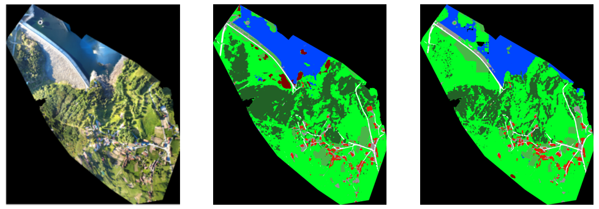

Adapting SAM2-UNet for High-Resolution LULC
Fine-tuned SAM2, a large foundation model, for high-resolution land cover segmentation. During training, OSM road vectors act as a distance-transform soft target, so the network learns the structure of roads and infrastructure. That auxiliary branch is removed after training, so the deployed model runs on plain RGB imagery and needs no extra data at inference. The peer-reviewed paper reports strong Boundary IoU on thin features, plus a zero-shot UAV test shot in Portugal.